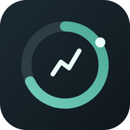
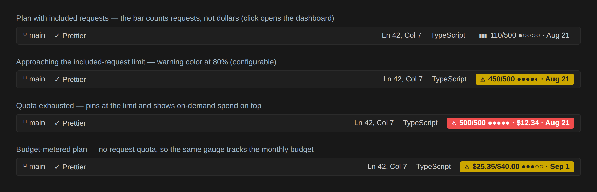
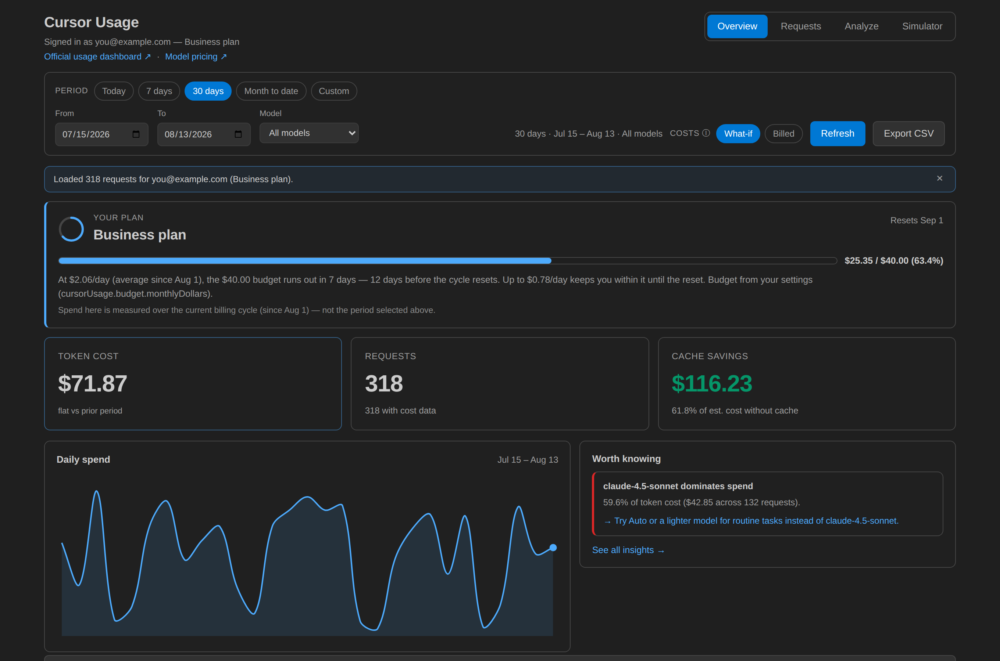
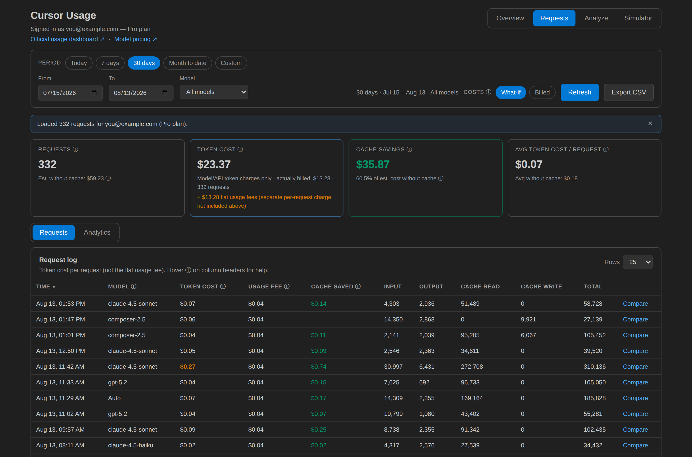
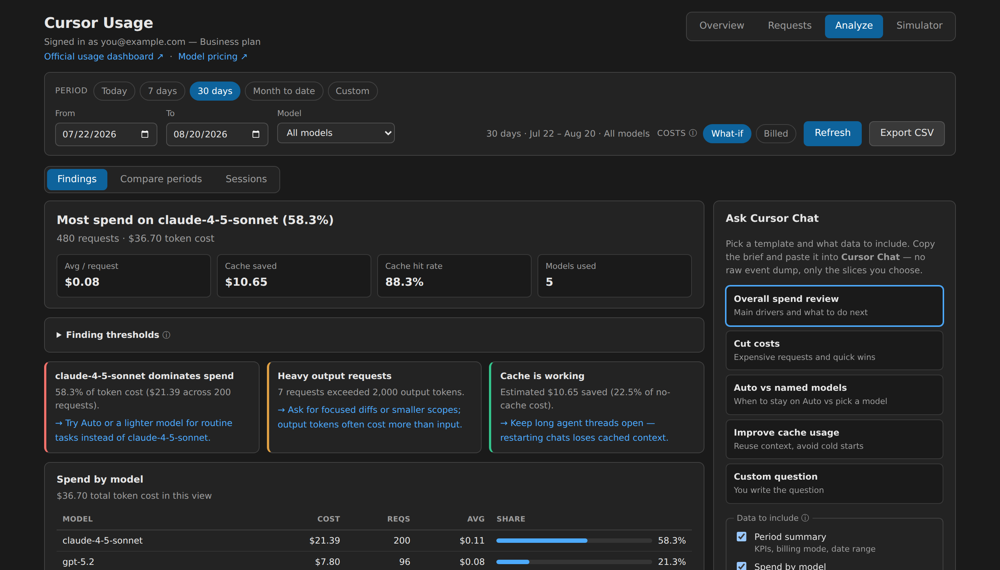
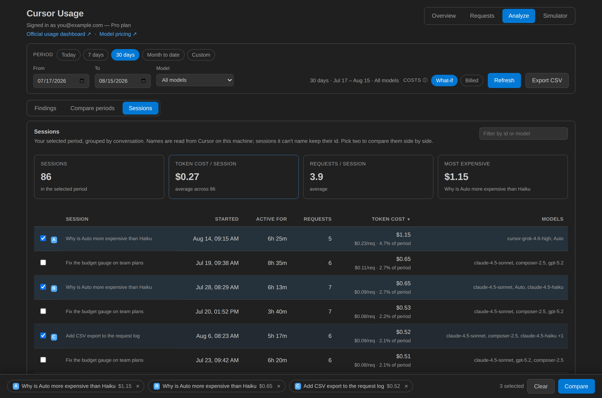
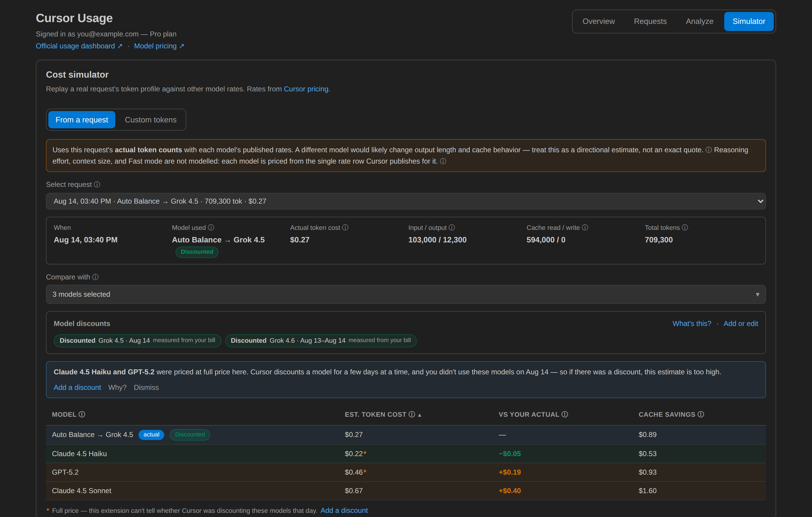

Cursor Usage Dashboard
See exactly where your Cursor requests and tokens go — right inside Cursor. Request quota, monthly budget burn-rate, cache savings, per-session comparisons, and a cost simulator. No proxy, no login.


Narrated walkthrough · 2 min 24 s · 60-second version
Install
Published on the Open VSX Registry — the registry Cursor's Extensions view searches.
- Open the Extensions view in Cursor (
Ctrl+Shift+X/Cmd+Shift+X). - Search for "Cursor Usage Dashboard" and click Install.
- Run Cursor Usage: Open Dashboard from the command palette — that's it.
What's inside
An always-on status bar gauge and four tabs, from simple to detailed.

Status bar
A live usage figure that turns yellow at 80% and red at 95% of your allowance — included requests, or your monthly budget.

Budget burn-rate
On plans metered in dollars: spend so far, your daily pace, when the budget runs out, and what still fits before the reset.

Requests
The full request log with cost, cache savings, model filters, and CSV export.

Analyze
Rule-based findings — which model dominates your spend, cache efficiency, spike requests, measured promotions — each with a concrete fix.

Sessions
Requests grouped by conversation. Pick up to four and compare cost, cache hit rate, and which models each one used.

Simulator
Replay any request's token profile against other models' published rates.
Privacy
Everything runs locally. The only network calls are to cursor.com — no proxy server, no separate login. The extension reads the session Cursor already created when you signed in. See the README for the full auth model.